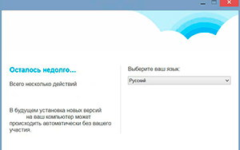
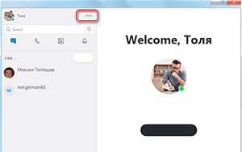
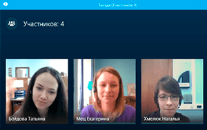

| Категория: | Общение | |
| Поддерживаемые ОС: | Windows 10 | |
| Разрядность: | 32 bit, 64 bit, x32, x64 | |
| Для устройств: | Компьютер | |
| Язык интерфейса: | на Русском | |
| Версия: | Последняя | |
| Разработчик: | Microsoft — Skype Limited |
Skype – самая популярная программа для чатов и видео звонков. После покупки программы компанией Microsoft она начала развиваться семимильными шагами, а в ее функционале появилось множество интересных фишек, которые позже позаимствуют другие мессенджеры и программы для онлайн общения. Немудрено, что Microsoft решат поставлять Skype вместе со своей новой популярной ОС – Windows 10. Теперь установить Скайп на Windows 10 стало еще проще, тем более когда вы создадите аккаунт для входа в виндовс 10 он же будет и аккаунтом для скайпа, при необходимости можно перезайти в свой старый аккаунт.
|  |  |  |
{kind=link}
{kind=link}
{kind=link}
Скайп для Windows 10 на компьютер
Одна из основных функций Скайпа – чаты. Вы можете как общаться с собеседником 1 на 1, так и создавать или вступать в групповые чаты от 3 человек в каждом. В чатах можно использовать стикеры, вставлять картинки, видео или отправлять маленькие файлы. В групповых чатах у вас есть все, чтобы его модерировать: возможности блокировать, выгонять, мутить участников, изменять приватность чата и не давать другим пользователям вступать без пригласительной ссылки.

Видео звонки – основная функция Скайпа, в которой он преуспел и стал самой популярной программой в категории. В Skype можно совершать как обычные, так и видео звонки между одним пользователем или сразу всем групповым чатом. Звонки в групповых чатах – удобная функция для работодателя, который желает удобно провести видеоконференцию онлайн. В звонке есть функция «Демонстрация экрана», с которой можно показывать презентации, макеты и другую информацию. Сами групповые звонки просто удобны для удаленного общения. Все звонки через интернет бесплатны, они проходят через сервера Скайпа и доходят до любых частей света без роуминга или огромной платы. В Скайпе есть и функция обычных звонков на мобильные номера. За небольшую плату на баланс Skype можно купить виртуальный номер, через который вы сможете звонить людям, не зарегистрированным в программе.
Скайп для версий windows:
Скачать Skype для Windows 10 бесплатно
| Приложение | OS | Распаковщик | Формат | Версия | Загрузка |
|---|---|---|---|---|---|
| Skype (Скайп) | Windows 10 | OpenBox | x32 | Бесплатно (на русском) | |
| Skype (Скайп) | Windows 10 | OpenBox | x64 | Бесплатно (на русском) | |
| Skype (Скайп) | Windows 10 | OpenBox | x32 — x64 | Бесплатно (на русском) |
Как установить Скайп для Windows 10:
Запустите файл.

Ознакомьтесь с информацией и нажмите "Далее".

Нажмите "Далее", или снимите галочки с рекомендуемого ПО и нажмите "Далее". Если снять все галочки, рекомендуемое ПО не установится!

После всех шагов нажмите "Установить".

Профиль в Skype – это профиль Microsoft, который вы создаете вместе с Windows 10. При создании профиля вы придумываете логин, по которому вас могут найти другие пользователи или ваши друзья. В Скайпе можно редактировать свой профиль, изменять свой ник, статус, аватарку, личную информацию и другие настройки аккаунта. С профилями других людей вы можете взаимодействовать, добавляя их в друзья или наоборот, блокируя их аккаунты как недоброжелательные.
Дооброе утречко)
Огромное спасибо тому, кто написал эту статью,а то я бы еще долго разбиралась )
вечер в хату
Давно пользуюсь Скайпом на телефоне, решила установить и на ПК, чтобы был под рукой. Ссылка рабочая, программа установилась минут за 5. Зашла в свою учетку без проблем, так что все супер)
Спасибо за хорошую статью и приложенное видео, очень помогло в установке скайпа. Для блогеров самая нужная программа!
привет я тоже блохер
Общаюсь в скайпе через ноут. На телефоне что то камера передняя тупит.
Ура
Классика. Старая и самая нормальная программа для видеосвязи.
Это моё первое и самое любимое приложение, которое позволило увидеть в живую своего собеседника. И никакие аналоги его не заменят. Так что скачиваем обновления и встречаемся в сети)!
да помню времена звонков приколов в скайпе )
а че ет от вас так луком пахнет?
Ахах, угарнул с того, что кому-то может потребоваться помощь в установке скайпа) А так, все работает четко.
мне нравится!
родители смогли сами установить Skype, хотя в этом особо ничего не понимают)
Друзья, новый скайп по сравнению со старым, ну просто бомба.
С карантином потребность пользоваться скайпом выросла до небес.
Отличная базовая бесплатная программа для общения с людьми со всего света)
Все легко и быстро
Установила проще — простого
Самая нормальная программа для связи и конференций
пользовался скайпом